Overview
Welcome to the Up and Running with Angular Workshop. Angular 2 was released in September 2016 and was a full re-write of the framework. With the re-write a lot has changed. In this workshop, you will learn how to build an Angular UI from the ground up.
Goal
The goal of this tutorial is to walk you through creating an application with the common features that a web application would have (headers, footers, forms, calls to API services, authentication, etc).
The tutorial is designed to be gone through from start to finish to build the application as the chapters build on each other.
For each chapter there is a start and complete branch in Github that you can pull down if you need it.
New Naming Convention
The first thing is what to call Angular. Angular 1 is now referred to as AngularJS. Angular 2 and above is referred to as just Angular. From here on out, we will just call it Angular. The only time to refer to Angular with a version number is when you are talking about a feature that it specific to that version. For example, in Angular 4, they add the TitleCase Pipe and an email validator.
Release Schedule
The second thing is that they are now following SemVer for the versioning of Angular and have a release schedule. For example, here is how version 2.3.1 would break down.

Release Schedule:
- Major: Every 6 months
- Minor: Every month
- Patch: Every week
Coming from Angular 1
Third, if you are coming from an AngularJS background, it is best if you do not try to compare the concepts between AngularJS and Angular. Just treat Angular as a whole new framework.
Using This Tutorial
Collapse Chapter List
If you click on the hamburger icon in the header (left icon with the 3 lines), it will toggle the view of the chapters so that you have more room to view the tutorial.
Copy Code Snippets
Every code snippet has a copy button on the right side of the snippet that will put the code onto the clipboard for you to paste into your code.
Found An Issue with Tutorial
If we are doing this tutorial in person as part of a class or workshop, please flag me down and let me know.
If you are going through this tutorial online by yourself, click on the github icon in the header (right icon) and log an issue so that I can take a look at it.
Getting up and running
Overview
To get started, we need to install and configure the following software first.
- Supported Platforms: Windows, Mac, or Linux computer
- Editor: Visual Studio Code (can use any text editor but workshop tested with Visual Studio Code)
- Software:
- Node 6.9+
- Angular CLI
Goals
- Setup your machine for the Workshop
Windows Showing File Extensions
Non-Windows users can skip to next section
By default Windows is set to not show file extensions for known files which causes files such as .gitconfig and .npmrc to show up as just a period with no file extension which makes it extremely difficult to figure out what the file actually is. To fix this we need to turn set Windows Explorer to show file extensions.
Exercise: Turn On Windows Showing File Extensions
- Open Windows Explorer
Click on the View Tab and select Options

Once the "Folder Options" dialog is open:
- Click on the View Tab
- Uncheck the "Hide extensions for known file types"
Click Ok

Visual Studio Code
Visual Studio Code is Microsoft lightweight cross platform IDE.
- Download Visual Studio Code at https://code.visualstudio.com/
- Once the download finishes, launch the installer except all of the defaults.
Node.js
NodeJS is used to power the Angular CLI as well as install all of our dependencies. The Angular CLI requires Node version 6.9 or greater.
- Download the latest stable version (LTS) of NodeJS which as of this writing is 6.11.0.
- Run the installer and accept all defaults.
- Verify that Node installed. Start a command prompt or terminal window and run:
Exercise: Verify Node Install
node -v
Angular CLI Install
The Angular CLI (Command Line Interface) makes it so that you do not have to worry about the Angular tooling and can focus instead on your code. You can create new projects, components, modules, services, guards, pipes and routes. As well it has commands for linting, testing and running our code.
All of the code that is generated by the Angular CLI following the Angular Style Guide.
While you do not have to use the Angular CLI, it is highly recommended, will increase your productivity, and this workshop only gives the instructions for developing with the Angular CLI.
Exercise: Install Angular CLI
Open a command prompt or terminal and run the following command
npm install -g @angular/cliVerify Angular CLI
ng --version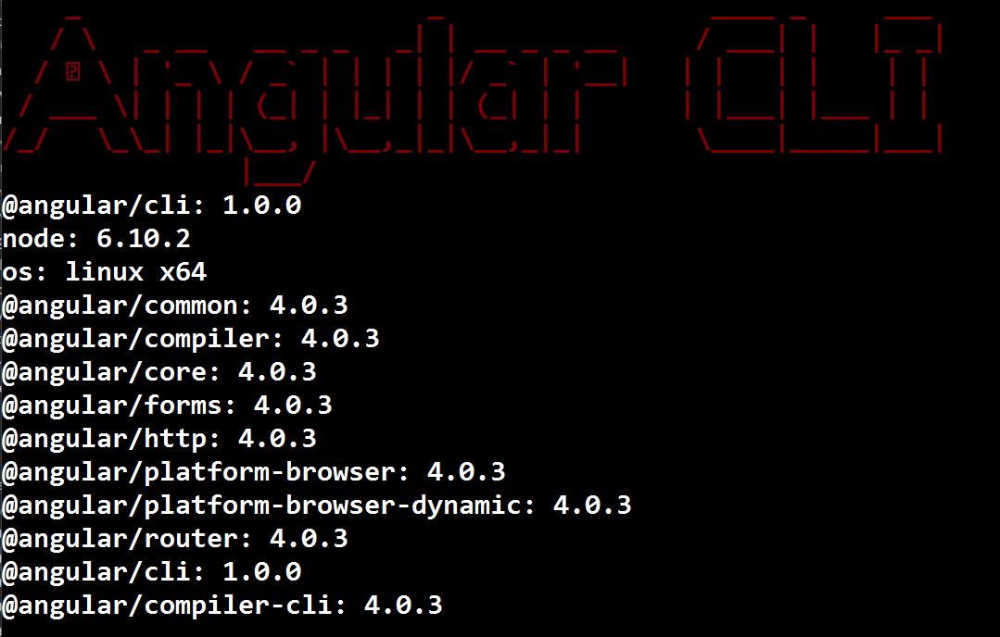
Create New Project
Overview
In this chapter we will be creating our project with the Angular CLI. We will use this project throughout the workshop.
Goals
- Understand how to create a new project
- Understand how to find help for an Angular CLI command
- Understand the project layout
- Understand how to run the project
Generate New Project
The project that the Angular CLI create for you follows all of the suggested standards and has webpack for bundling built-in to it.
Exercise: Create Angular Project
- Open a command prompt
Navigate to where you want to store your project files. I use c:\projects on Windows and ~/projects on OSx. You are free to use anywhere that you want.
Windows:
cd \OSx:
cd ~/
Create the projects directory. If you already have a directory that you store your projects in then you can skip this step.
mkdir projectsNavigate into the projects directory
cd projectsGenerate a project named ngws that uses scss for styling and includes a routing file by running
ng new ngws --style scss --routingSample Output:

If you want to see the other ng new options or any Angular CLI command append the --help
ng new --help
Opening Project in Visual Studio Code
- Open Visual Studio Code
- Click File -> Open Folder...
- Navigate to angular-tutorial directory and click Select Folder
Your project should now be opened in Visual Studio Code
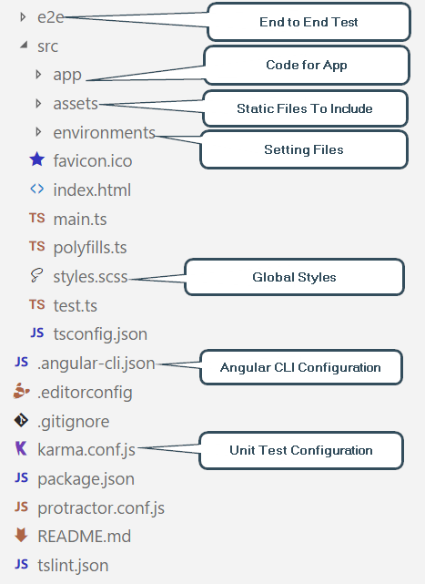
Running Project
Exercise: Run the project
The Angular CLI has a built-in command for starting up a web server for your project called ng serve which will run webpack to bundle up your code, start the web server, rebuild on file changes (watch) and refresh connected browsers (live reload).
- Visual Studio Code has a built-in terminal that we can use to run our commands. On Windows, this is a powershell prompt. To open the Integrated Terminal go under the View Menu and click on the Integrate Terminal or press Ctrl+`
- You are free to use the regular command prompt outside of Visual Studio Code if you would like
Run
ng serve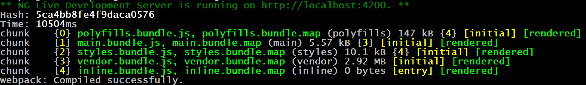
The ng serve command will stay running in order to provide live reloading functionality. If you need to stop ng serve, press ctrl+cIf you launch your browser and navigate to http://localhost:4200, you will see a page that looks like
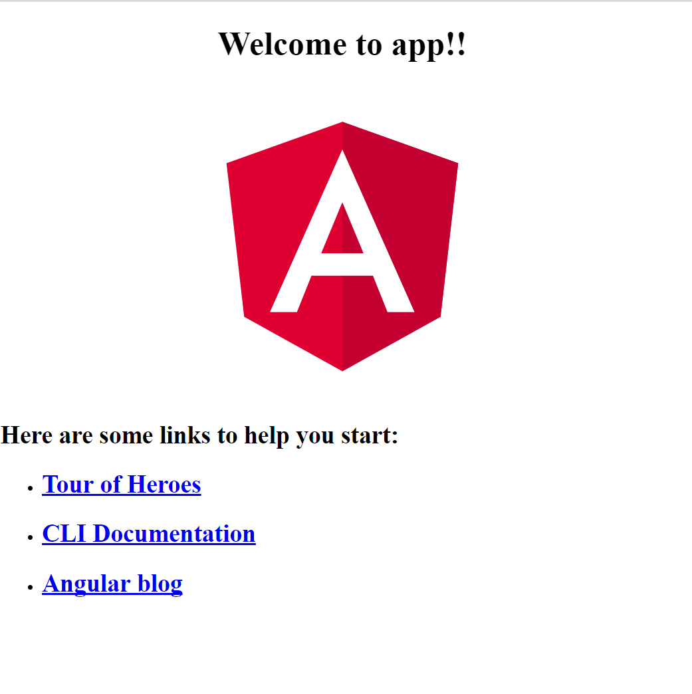
Navigating around Visual Studio Code
Being able to effectively use your editor is key to being a super productive developer. With Visual Studio Code, there are several shortcut keys that will help you out.
| Purpose | Key |
|---|---|
| Integrated Terminal | ctrl+` |
| Open File | ctrl+p |
| Switch Between Files | ctrl+tab |
| Switch Between Files Reverse | ctrl+shift+tab |
| Hide Side Menu | ctrl+b |
| Toggle Word Wrap for File | alt+z |
| Format Document | ctrl+alt+f |
Visual Studio Settings
In Visual Studio Code, you will notice that there is a map looking thing showing in the upper right corner. This is called the mini map and it is a layout of your source code file. I typically hide the mini map to give myself more editing space.
Exercise: Hide Mini Map
To hide the mini map go into the Preferences -> Settings (File -> Preferences -> Settings on Windows) and add the following setting
"editor.minimap.enabled": false,
Exercise: Turn On Word Wrap
I also like to always have word wrap turned on. You can turn this on in the same preferences file as you used for turning off the mini map above.
"editor.wrappingIndent": "same",
Review
In this chapter we learned 3 things
- How to create a new projects using the
ng newcommand - What the project layout looks like for an Angular project generated with the CLI
- How to run our project with the
ng servecommand and view it at http://localhost:4200
Bootstrap
Overview
For our styling we are going to use Bootstrap 4 which is still in alpha. The reason for picking Bootstrap 4 and not Bootstrap 3 is so that we can use Angular Bootstrap library (ng-bootstrap). ng2-bootstrap is written 100% in JavaScript with no need for JQuery or Bootstrap's JavaScript library to be included.
Goals
- Understand how to include Bootstrap 4 into your project
Install Bootstrap
Exercise: Install Bootstrap
- In the VS Code Integrated Terminal, click the + to open a 2nd terminal
Run the npm install command for bootstrap and font-awesome
npm install --save bootstrap@next font-awesome @ng-bootstrap/ng-bootstrap- This will install ng-bootstrap along with bootstrap and font-awesome. Bootstrap is still required for ng-bootstrap to work.
Before we can use ng-bootstrap we need to add it to the AppModule
Open the src\app\app.module.ts
app.module.tsImport the NgbModule from @ng-bootstrap/ng-bootstrap library
import {NgbModule} from '@ng-bootstrap/ng-bootstrap';In the @NgModule imports section add NgbModule.forRoot()
NgbModule.forRoot()
Add Bootstrap to Project
Exercise: Add Bootstrap to Project
First we need to create our own custom Bootstrap stylesheet so that we can override the Bootstrap scss variables to create our own colors and styles using the existing Bootstrap scss variables.
In the src\assets folder, create a new folder named bootstrap
You can create folder right in Visual Studio Code by right-click on the src\assets folderbootstrapIn the bootstrap folder, create a file called _variables.scss
You can create file right in Visual Studio Code by right-click on the src\assets folder_variables.scssAdd the following to the _variables.scss file
// Variables // Colors // // Grayscale and brand colors for use across Bootstrap. $dark-blue: #003C71; // Start with assigning color names to specific hex values. $white: #fff !default; $black: #000 !default; $red: #d9534f !default; $orange: #f0ad4e !default; $yellow: #ffd500 !default; $green: #5cb85c !default; $blue: #0275d8 !default; $teal: #5bc0de !default; $pink: #ff5b77 !default; $purple: #613d7c !default; // Create grayscale $gray-dark: #292b2c !default; $gray: #464a4c !default; $gray-light: #636c72 !default; $gray-lighter: #eceeef !default; $gray-lightest: #f7f7f9 !default; // Reassign color vars to semantic color scheme $brand-primary: $blue !default; $brand-success: $green !default; $brand-info: $teal !default; $brand-warning: $orange !default; $brand-danger: $red !default; $brand-inverse: $gray-dark !default;In the bootstrap folder, create a file called bootstrap.scss
bootstrap.scssAdd the following contents to the bootstrap.scss file.
Note that the list of included files outside of the variables file is the same as the ones in the node_modules\bootstrap\scss\bootstrap.scss file with a ~bootstrap/scss prefix so that the scss compiler is able to find the included file in the node_modules\bootstrap\scss directory.@import "variables"; @import "~bootstrap/scss/variables"; @import "~bootstrap/scss/mixins"; @import "~bootstrap/scss/custom"; // Reset and dependencies @import "~bootstrap/scss/normalize"; @import "~bootstrap/scss/print"; // Core CSS @import "~bootstrap/scss/reboot"; @import "~bootstrap/scss/type"; @import "~bootstrap/scss/images"; @import "~bootstrap/scss/code"; @import "~bootstrap/scss/grid"; @import "~bootstrap/scss/tables"; @import "~bootstrap/scss/forms"; @import "~bootstrap/scss/buttons"; // Components @import "~bootstrap/scss/transitions"; @import "~bootstrap/scss/dropdown"; @import "~bootstrap/scss/button-group"; @import "~bootstrap/scss/input-group"; @import "~bootstrap/scss/custom-forms"; @import "~bootstrap/scss/nav"; @import "~bootstrap/scss/navbar"; @import "~bootstrap/scss/card"; @import "~bootstrap/scss/breadcrumb"; @import "~bootstrap/scss/pagination"; @import "~bootstrap/scss/badge"; @import "~bootstrap/scss/jumbotron"; @import "~bootstrap/scss/alert"; @import "~bootstrap/scss/progress"; @import "~bootstrap/scss/media"; @import "~bootstrap/scss/list-group"; @import "~bootstrap/scss/responsive-embed"; @import "~bootstrap/scss/close"; // Components w/ JavaScript @import "~bootstrap/scss/modal"; @import "~bootstrap/scss/tooltip"; @import "~bootstrap/scss/popover"; @import "~bootstrap/scss/carousel"; // Utility classes @import "~bootstrap/scss/utilities"; /* * Font Awesome 4.x */ $fa-font-path: "~font-awesome/fonts"; @import "~font-awesome/scss/font-awesome";
Now we need to configure the angular cli to import the bootstrap libraries.
Open the .angular-cli.json file that is in the root of the project. This file is the configuration file for our project for the Angular CLI
In Visual Studio Code you can quickly open a file by using ctrl+p to open the "Go To File" prompt and typing in the file name.angular-cli.jsonFind the apps\styles section and replace the section with:
"styles": [ "assets/bootstrap/bootstrap.scss", "styles.scss" ],If the code alignment upon paste is off you can run the "Format Document" command to fix it. Ctrl+Shift+P and search for "Format Document" or use Alt+Shift+F
Add Banner Section to Top
Exercise: Add Banner To Top of Page
Open src\app\app.component.html
app.component.htmlReplace the contents with:
<div class="jumbotron"> <div class="container"> <h1>{{title}}</h1> </div> </div> <div class="container"> <router-outlet></router-outlet> </div>Lets change the title to something better than "App Works!"
- Open the src\app\app.component.ts file
On line 9, change the title variable to
title = 'Our Awesome Todo App!';
View Changes
Exercise: Restart ng serve
Go to the integrated terminal in Visual Studio Code that is running the
ng servecommand and do a ctrl+c to stop it.There is a dropdown on the right side of the Visual Studio Code integrated terminal that allows you to change to the other terminals that are currently open for your project
Run the
ng servecommand again.ng serveThe web page should now look like
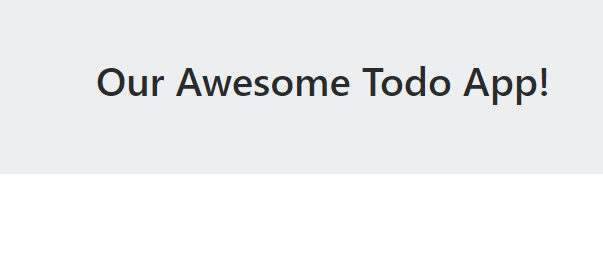
Review
In this chapter we learned how to use Bootstrap for our project.
Learned:
- How to install Bootstrap 4 and font-awesome
- How to integrate it into the Angular CLI in the .angular-cli.json file
- How to create our own custom Bootstrap SCSS variables to override the built-in styles of Bootstrap with our own colors
- How to create a banner at the top of the page
- How to change the text that appears in the banner using our TypeScript title variable
- Learned that when you modify the .angular-cli.json file that you have to restart
ng servefor the changes to take effect
Template Based Forms
Overview
There are 2 options for creating forms within Angular: Template based and Model based. This chapter will cover template based forms.
Template based forms are simple and easy to use. They are great for simple use cases. However, there are some limitations with template based forms: 1.) You end up with a lot of logic in your html code 2.) Cross field validation is more difficult 3.) You can not unit test your form and validation logic.
To demonstrate template based forms, we are going to be build a login component.
Goals
- Understand template based forms
- Create template based form
- Implement input validation
- Submit form values to a service
Code from Previous Chapter
If you have not completed the previous chapter you can get the completed code by downloading the code from Github.
Exercise: Downloading Code
- Downloading and extracting the zip file into your projects folder (c:\projects or ~/projects) at https://github.com/digitaldrummerj/angular-tutorial-code/archive/chapter-bootstrap.zip
After you get the code, run npm install to get all of the NPM dependencies.
npm installOpen Visual Studio Code
- In Visual Studio Code, go under the File menu, select Open folder and navigate to the folder that you unzipped the files into
- If you have ng serve running in a different editor, make sure to stop it from running.
Open the Integrated Terminal in Visual Studio Code (ctrl + `) and run ng serve
ng serve
Create Login Component
The first thing we need to do is to create our login component using the Angular CLI. We will use the ng generate component command to do this.
Exercise: Create Login Component
- Within VS Code, open up the integrated terminal (ctrl+`) or view menu and then "Integrated Terminal"
Run the ng generate command below to create the login component
ng generate component loginThe generate command will create 4 files:
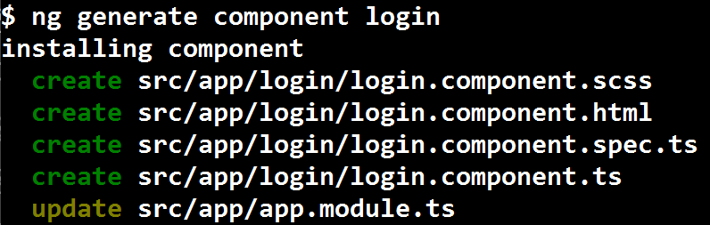
- scss (styles)
- html (view)
- spec file (test)
- component (controller)
- add reference to the component in the app.module.ts file.
Add Route
In order to view our Login component we need to tell Angular how to route to it. We are going to add a route at '/login' to the LoginComponent.
Exercise: Login Routing
Before we can view our Login component, we need to tell Angular how to route to the component
Open the src\app\app-routing.module.ts file
app-routing.module.tsYou need to import the LoginComponent before we can reference it. On line 3, add the following statement
import { LoginComponent } from './login/login.component';In the routes array, we need to add another array item to be able to route to the LoginComponent. Add the following at the end of line 9
, { path: 'login', children: [], component: LoginComponent }Your routes should look like the following
const routes: Routes = [ { path: '', children: [] }, { path: 'login', children: [], component: LoginComponent } ];The Login page should display when you navigate to http://localhost:4200/login
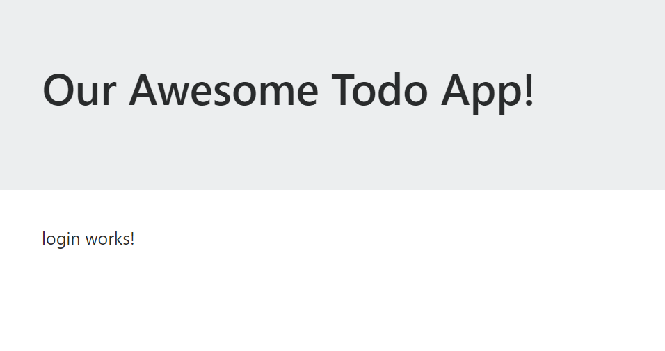
Note: When you navigate to the login route, the LoginComponent is loaded into the<router-outlet></router-outlet>in the html in src\app\app.component.html. The router-outlet tag is how Angular knows where to put the rendered content for the route.
Create Form
Next we are going to create the form without any validation logic at all. Our form will have 2 input fields: email and password and 2 buttons: submit and cancel. We will use Bootstrap for the styling and Angular for the validation.
Exercise: Creating the Form
Open src\app\login\login.component.html
login.component.htmlReplace the existing html with the following
<h1>Login</h1> <hr> <div> <form autocomplete="off" novalidate> <div class="form-group"> <label for="email">Email:</label> <input name="email" id="email" type="text" class="form-control" placeholder="Email..." /> </div> <div class="form-group"> <label for="password">Password:</label> <input name="password" id="password" type="password" class="form-control" placeholder="Password..." /> </div> <button type="submit" class="btn btn-primary">Login</button> <button type="button" class="btn btn-default">Cancel</button> </form> </div>- This form is using Bootstrap for the styling with the form-group, form-control btn, and btn-* css classes.
- The autocomplete="off" and novalidate directives for the form tag tell the browser to turn off that built-in functionality so that we can do our validation with Angular.
Handle Form Submission
In order to submit the form we need to tell Angular that that login form is an ngForm and use the ngSubmit event to tell Angular what to do when the form submit button is clicked.
Exercise: Import Angular FormsModule
Before we can interact with our form using Angular, we need to import the FormsModule into our application.
Open src\app\app.module.ts
app.module.tsAdd an import statement for FormsModule from @angular/forms
import { FormsModule } from '@angular/forms';Before we can use the imported module, we need to add it to the @NgModule declaration in the imports array. We are going to add it between the BrowserModule and AppRoutingModule.
FormsModule,Your @NgModule imports section should now look like:
imports: [ BrowserModule, FormsModule, AppRoutingModule ],
Exercise: Add login function
Go back to the login.component.html file
login.component.htmlOn the
<form>tag we need to add 2 additional attributes to create a reference variable to the form and handle the form submit.#loginForm="ngForm" (ngSubmit)="login(loginForm.value)"- The #loginForm creates a variable called loginForm that reference ngForm. This will allow us to reference the loginForm in the login.component.ts file.
- The ngSubmit upon form submit event will call the login function in the login.component.ts file and pass the loginForm.value into it. The loginForm.value holds the values for the form fields.
In order to be able to access all of the form field values by using loginForm.value we need tdo add an (ngModel)="NAME" attribute onto each field, replacing "NAME" with the name that we want to refer to the field as.
On the email input field we need to add an attribute to tell Angular to implement 1 way binding on the field by using the
(ngModel)attribute(ngModel)="email"On the password field we are going to do the same thing that we just did to the email field.
(ngModel)="password"
Now that the basics of the form have been created, we are ready handle the form submit event and implement the login function that (ngSubmit) is calling.
Open the login.component.ts file
login.component.tsInside of the LoginComponent class after the ngOnInit, add the following function. For now we are just going to output the form values to the Developer Tools console in the browser.
login(formValues) { console.log(formValues); }In your browser, while viewing the login form at http://localhost:4200/login open the developer tools and click the console tab so that you can see the console output.
Now enter a value into the email and password fields and click the submit button. You will see output similar to the below image where I entered the email of email@gmail.com and password of 123456
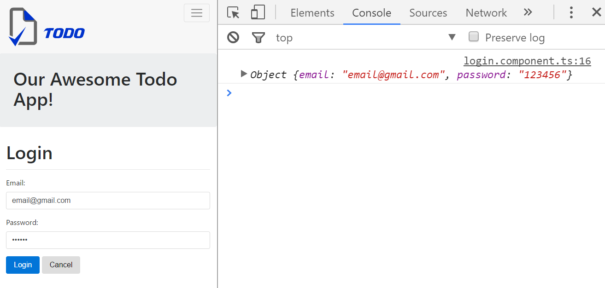
Implement Login Service
Now that we have our form done, we are going to implement our login service.
Exercise: Generate Service
- Within VS Code, open up the integrated terminal (ctrl+`) or view menu and then "Integrated Terminal"
Run the ng generate command below to create the Authorization service. I like to store my services under a shared\services folder.
ng generate service shared/services/auth --module AppThe generate command will create 2 files and update app.module.ts:
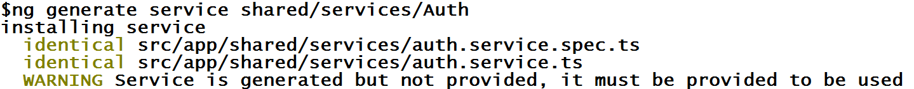
- spec file (test)
- typescript (service)
- updated app.module.ts to add LoginService as a provider
Before we can make HTTP calls in our AuthService, we need to import the HttpModule into your AppModule
Open the app.module.ts file
app.module.tsAdd an import statement for the HttpModule that comes from @angular/http
import { HttpModule } from '@angular/http';In the @NgModule imports array add the HttpModule
HttpModule,
Exercise: Implement Auth Service Login Function
For this tutorial, I have created an API for us to use.
The first thing we are going to do is create our login function
Open the src\app\shared\services\auth.service.ts file
auth.service.tsImport the following so that we can make our HTTP calls and get a response back.
import { Http, Response, RequestOptions } from '@angular/http'; import { Observable } from 'rxjs/Rx';
In order to use the HTTP module, we need to inject it into our constructor
constructor(private http: Http) { }
For the API that we are using (SailsJS based), it requires that we set the HTTP option to allow credentials so that the session cookie can be passed back and forth, else it will always think you haven't logged in.
private options = new RequestOptions({ withCredentials: true });Next we need to create our login function within the AuthService class that will call our API. Place the login function after the constructor.
For now we are hard coding the API url into the service. In the "Environment Configuration" chapter we will change this to pull from a configuration filelogin(email: string, password: string): Observable<boolean> { let loginInfo = { "email": email, "password": password }; return this.http.put("https://dj-sails-todo.azurewebsites.net/user/login", loginInfo, this.options) .do((res: Response) => { if (res){ return Observable.of(true); } return Observable.of(false); }) .catch(error => { console.log('login error', error); return Observable.of(false); }); }- This code setups the call to the login API and and returns back an Observable.
Note that this code is not called until someone subscribes to the login function which we will be doing next.
The API is setup for username/password validation. Make sure you do not use your real passwords as this is just a test API and not production secured.
Exercise: Call AuthService from LoginComponent
Now that we have our AuthService completed, we need to call it from our LoginComponent. If we get a user back we will redirect the user to the home page
Open the src\login\login.component.ts file
login.component.tsImport the AuthService and Router so that we can make call our LoginService and redirect upon successful login.
import { AuthService } from '../shared/services/auth.service'; import { Router } from '@angular/router';In order to use the AuthService and Router, we need to inject it into our constructor
constructor(private authService: AuthService, private router: Router) { }Next we need to update our login function to call the AuthService and redirect if it finds the user.
login(formValues) { this.authService.login(formValues.email, formValues.password) .subscribe(result => { if (!result) { console.log('user not found'); } else { this.router.navigate(['/']); } }); }Navigate to http://localhost:4200/login .
- If you enter an email of foo@foo.com with a password 123456 you should be redirected to the home page
- If you enter a bogus email or password, you will see a "user not found" message in the browser developer tools console.
Exercise: Show Invalid Login Message
Up to this point, we have been using the console to output when the login failed but we can not expect the user to have the dev tools console open. Instead we need to show to the user when there is an error.
Open the login.component.ts file
login.component.tsCreate a new variable inside of the LoginComponent class called invalidLogin, is of type boolean and the default value is false.
invalidLogin: boolean = false;Now in the login method replace the console.log line and set the invalidLogin variable to true. Make sure in the else statement that you set the invalidLogin to false.
this.invalidLogin = true;- We have to use this. to access the variable due to scoping.
Now we are ready to implement the UI to show the error message.
Open the login.component.html file
login.component.htmlWe want to put our message after the cancel button but inside the
</form>tagAdd the following alert message
<div *ngIf="invalidLogin" class="alert alert-danger"> Invalid Login </div>
Required Validation
Exercise: Add Required Validation
A standard requirement for html forms is to have client side validation. In this section we are going to implement the required field validation for both email and password.
Adding required validation is as easy as adding a required attribute to the input field
Open the login.component.html
login.component.htmlOn the email and password fields add the
requiredattributerequired
Exercise: Display Validation Errors
Next we want to display a message to the user when they have invalid entries in the form fields.
In order to refer to the email field by name when checking errors, we need to add the
#email="ngModel"attribute to the email input field to tell Angular to create a variable for the control and make the value the ngModel value for the email field.#email="ngModel"For the email field, inside of the form-group div tag and after the input field add the following code. This code will show when the required errors triggers. To trigger the error message, click on the email field and then click on the password field.
<div *ngIf="email.errors && (email.dirty || email.touched)" class="alert alert-danger"> <div [hidden]="!email.errors.required"> Email is required </div> </div>Just like the email field, we need to add the
#password="ngModel"attribute to the input control to name the field#password="ngModel"For the password field, inside of the form-group div tag and after the input field add the following code. This code will show when the required errors triggers. To trigger the error message, click on the password field and then click on the email field.
<div *ngIf="password.errors && (password.dirty || password.touched)" class="alert alert-danger"> <div [hidden]="!password.errors.required"> Password is required </div> </div>
Email Validation
Exercise: Add Email Validation
With the Angular 4 release, they added an email validator. To add the validator to our email field, we just need to add an email attribute like we did for the required attribute.
email
Next we need to add a message like we did for the required validator for when the email validation triggers on an invalid email. Add the following code below the required message but within the <div> that checks if there are errors.
<div [hidden]="email.errors.required || !email.errors.email">
Must be an email address
</div>
Now we are ready to test the email validation.
The validation will trigger if you input text into the email field that is not a valid email address.
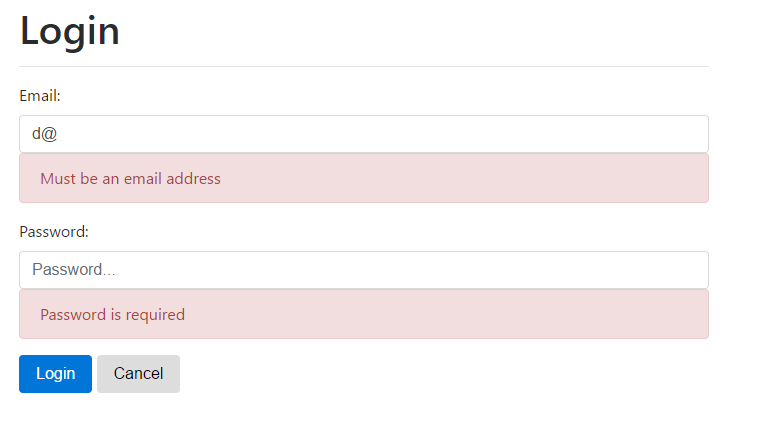
Disable Login Button
Exercise: Disable Login Button Until Valid
The last thing we want to do is to disable the login button until the form is valid.
Find the submit button and add the disabled attribute that makes sure that the loginForm is valid before enabling the button
[disabled]="loginForm.invalid"Now when either field is invalid the login button will be disabled and a lighter share of blue
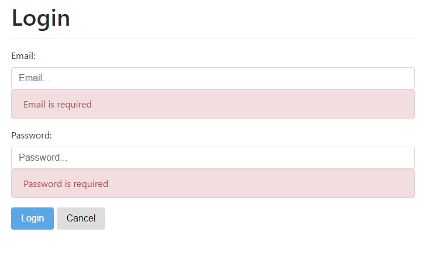
Create Create Account Component
Up to this point, we have only been able to login to an existing account. Now we are going to create the signup page.
Creating the signup component is just like the rest of the component that we have created. We will have an html, scss, spec, and ts file. We will have a form that calls to a function in the component that calls to a service to process the data.
Exercise: AuthService Signup Function
We are first going to create the signup function in the AuthService.
Open the src\app\shared\services\auth.service.ts
auth.service.tsAdd the following method to allow an account to be created
signup(email: string, password: string): Observable<boolean> { let loginInfo = { "email": email, "password": password }; return this.http.post("https://dj-sails-todo.azurewebsites.net/user/", loginInfo, this.options) .do((res: Response) => { if (res) { return Observable.of(true); } return Observable.of(false); }) .catch(error => { console.log('signup error', error); return Observable.of(false); }); }REMINDER: Since we have to pass the password to the API in order to create the account and we are communicating over a non-secure channel, make sure you do not use your real passwords.
Exercise: Create Signup Component
Open terminal and run the ng generate to create the signup component
ng generate component signup
Exercise: Add Signup Route
Open the src\app\app-routing.module.ts file
app-routing.module.tsImport the signup component
import { SignupComponent } from './signup/signup.component';Add a new route to get to the signup page
{ path: 'signup', component: SignupComponent},You routes should look like
const routes: Routes = [ { path: '', children: [], }, { path: 'login', children: [], component: LoginComponent }, { path: 'signup', component: SignupComponent}, ];
Exercise: Create Signup UI
Open the src\app\signup\signup.component.html file
signup.component.htmlReplace the contents with the following UI and template based form to allow a user to create an account
<h1>Sign Up</h1> <hr> <div> <form #signupForm="ngForm" (ngSubmit)="signup(signupForm.value)" autocomplete="off" novalidate> <div class="form-group"> <label for="userName">Email:</label> <input #email="ngModel" (ngModel)="email" name="email" id="email" required email id="email" type="text" class="form-control" placeholder="Email..." /> <div *ngIf="email.errors && (email.dirty || email.touched)" class="alert alert-danger"> <div [hidden]="!email.errors.required"> Email is required </div> <div [hidden]="email.errors.required || !email.errors.email"> Must be an email address </div> </div> </div> <div class="form-group"> <label for="password">Password:</label> <input #password="ngModel" (ngModel)="password" name="password" id="password" required minlength="6" id="password" type="password" class="form-control" placeholder="Password..." /> <div *ngIf="password.errors && (password.dirty || password.touched)" class="alert alert-danger"> <div [hidden]="!password.errors.required"> Password is required </div> <div [hidden]="!password.errors.minlength"> Password must be at least 6 characters long. </div> </div> </div> <span (mouseenter)="mouseoverLogin=true" (mouseleave)="mouseoverLogin=false"> <button type="submit" [disabled]="signupForm.invalid" class="btn btn-primary">Sign Up</button> </span> <button type="button" (click)="cancel()" class="btn btn-default">Cancel</button> <span><a [routerLink]="['/login']">login to existing account</a></span> </form> <br /> <div *ngIf="loginInvalid" class="alert alert-danger">Invalid Login Info</div> </div>Open the src\app\signup\signup.component.ts file
signup.component.tsReplace the contents of the file with the following
import { Component, OnInit } from '@angular/core'; import { AuthService } from '../shared/services/auth.service'; import { Router } from '@angular/router'; @Component({ selector: 'app-signup', templateUrl: './signup.component.html', styleUrls: ['./signup.component.scss'] }) export class SignupComponent implements OnInit { loginInvalid: boolean = false; constructor(private authService: AuthService, private router: Router) { } ngOnInit() { } signup(formValues) { this.authService.signup(formValues.email, formValues.password) .subscribe(result => { if (!result) { this.loginInvalid = true; } else { this.router.navigate(['/']); } }); } }
Exercise: Add Link Between Login and Signup
Open the login.component.html file
login.component.htmlNext to the cancel button add the following HTML to give a link to the create page
<span><a [routerLink]="['/signup']">create account</a></span>If you go to http://localhost:4200/signup you should now to be able to signup and navigate between the signup and login pages. Once signed up, you will be redirected to the home page and shown the todo items.
Reactive Forms
Overview
In the previous chapter, we took a look at template based forms. Templates are great for very simple forms that you do not want to unit test at all. However, if you want to unit test your forms you will need to reuse reactive based forms.
Reactive forms allow you to define the form fields and validation in the component instead of the template. You can easily test the form fields and validation logic. You can also dynamically build the form and validation in the component.
We are going to build the form to enter our Todo items using Reactive forms.
Goals
- Understand reactive forms
- Create a reactive form
- Implement input validation
- Submit form values to a service
Code from Previous Chapter
If you have not completed the previous chapter you can get the completed code by downloading the code from Github.
Exercise: Downloading Code
- Downloading and extracting the zip file into your projects folder (c:\projects or ~/projects) at https://github.com/digitaldrummerj/angular-tutorial-code/archive/chapter-template-forms.zip
After you get the code, run npm install to get all of the NPM dependencies.
npm installOpen Visual Studio Code
- In Visual Studio Code, go under the File menu, select Open folder and navigate to the folder that you unzipped the files into
- If you have ng serve running in a different editor, make sure to stop it from running.
Open the Integrated Terminal in Visual Studio Code (ctrl + `) and run ng serve
ng serve
Create Todo Component
Exercise: Create Todo Component
- Within VS Code, open up the integrated terminal (ctrl+`) or view menu and then "Integrated Terminal"
Run the ng generate command below to create the todo component
ng generate component todoThe generate command will create 4 files:
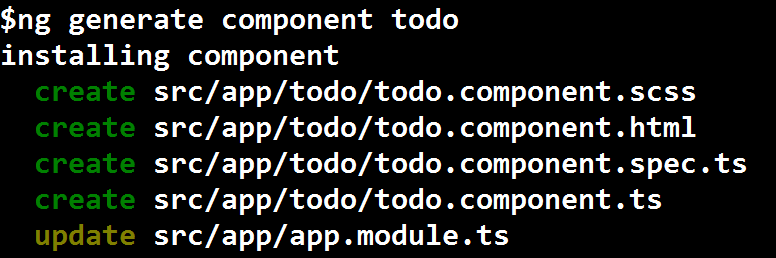
- scss (styles)
- html (view)
- spec file (test)
- component (controller)
- add reference to the component in the app.module.ts file.
Add Route
Exercise: Todo Routing
Before we can view our todo component, we need to tell Angular how to route to the page
Open the src\app\app-routing.module.ts file
app-routing.module.tsAdd the Import statement for the todo component on line 3
import { TodoComponent } from './todo/todo.component';We want to make the Todo component the home page. We can do this by adding a component field to the
path: ''route{ path: '', children: [], component: TodoComponent }You routes should look like
const routes: Routes = [ { path: '', children: [], component: TodoComponent }, { path: 'login', children: [], component: LoginComponent }, { path: 'signup', component: SignupComponent}, ];The todo page should display when you to the home, http://http://localhost:4200/
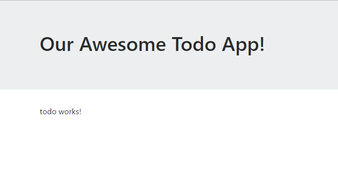
Note: When you navigate to the home page, the TodoComponent is loaded into the<router-outlet></router-outlet>in the html in src\app\app.component.html. The router-outlet tag is how Angular knows where to put the rendered content for the route.
Create Form
Next we are going to create the form without any validation logic at all. Our form will have 1 input field for the todo item and an add button.
Exercise: Import ReactiveFormsModule
With reactive forms, we are going to setup the form in your components TypeScript file.
We need to import the ReactiveFormsModule into our AppModule before we can use it.
Open the src\app\app.module.ts
app.module.tsAdd the ReactiveFormsModule to the existing @angular/forms import so that it looks like
import { FormsModule, ReactiveFormsModule } from '@angular/forms';In the @NgModule imports you need to add ReactiveFormsModule to the list
imports: [ BrowserModule, FormsModule, ReactiveFormsModule, HttpModule, AppRoutingModule ],
Exercise: Form setup
Now we are ready to add all of the functionality to the component for the UI to interface with. For the todo component it is the src\app\todo\todo.component.ts file. We need to add the Form.
Open the todo\todo.component.ts file
todo.component.tsWhen creating Reactive Forms, you will need to import the FormGroup and FormBuilder modules from @angular/forms
import { FormGroup, FormBuilder } from '@angular/forms';In order to use the FormBuilder we need to inject it into the TodoComponent's constructor
constructor(private formBuilder: FormBuilder) {}Before creating our form, we need to define the addForm variable to hold the configuration. Inside of the TodoComponent class above the constructor, add the following variable
addForm: FormGroup;To configure the form we will use the ngOnInit lifecycle event. The ngOnInit lifecycle event will run before the component has rendered. Inside the ngOnit function we need to tell Angular that the addForm is a formBuilder group with 1 field called item with an empty default value.
this.addForm = this.formBuilder.group({ 'item': '' });
Exercise: Creating the Todo UI
We are now ready to create our UI.
Open src\app\todo\todo.component.html
todo.component.htmlReplace the existing html with:
<div class="container"> <div class="page-header"> <h1 align="center">Todo List</h1> </div> <form role="form" [formGroup]="addForm" class="text-center"> <div class="form-group row"> <div class="col-sm-10"> <input type="text" class="form-control form-control-lg" formControlName="item" placeholder="Todo!"> </div> <div class="col-sm-2"> <button type="submit" [disabled]="addForm.invalid" class="btn btn-primary btn-lg btn-block">Add</button> </div> </div> </form> <div class="container"> <h3>Form Status Info</h3> <table class="table table-striped table-bordered"> <thead> <tr> <th>Status</th> <th>Form</th> <th>Item Field</th> </tr> </thead> <tbody> <tr> <td>Dirty</td> <td>{{ addForm.dirty }}</td> <td>{{ addForm.get('item').dirty }}</td> </tr> <tr> <td>Touched</td> <td>{{ addForm.touched }}</td> <td>{{ addForm.get('item').touched }}</td> </tr> <tr> <td>Valid</td> <td>{{ addForm.valid }}</td> <td>{{ addForm.get('item').valid }}</td> </tr> <tr> <td>Errors</td> <td>N/A</td> <td><pre>{{ addForm.get('item').errors | json }}</pre></td> </tr> <tr> <td>Form Field Values</td> <td colspan="2"><pre>{{ addForm.value | json }}</pre></td> </tr> </tbody> </table> </div> </div>- The [formGroup] binds the addForm in the todo.component.ts to the form.
- On the input field, the formControlName corresponds to the
itemfield in theaddFormFormGroup - The form is using Bootstrap for the styling with the form-group, form-control, btn, and btn* css classes.
- The form status info section, is debugging information for the form and the item field for us so that we can see the current state, validation errors, and the form field values.
- As you type into the item field, the form status info value section will update
The add button is set as disabled until validation passes.
If you completed the previous chapter on Template Forms, you will notice that we did not setup any ngModel tags or pass in the form to the save method. With Reactive Forms, the formGroup provides the data binding for us.
Add Submit Method
In order to submit the form we need to add an (ngSubmit)=""
Exercise: Add ngSubmit
Open src\app\todo\todo.component.html file
```bash todo.component.html ```On the
<form>tag add the(ngSubmit)=""attribute and have it call the save function(ngSubmit)="save()"Open the src\app\todo\todo.component.ts file
todo.component.tsAdd a function called save that returns a void. Inside of the save function add a console log that outputs the addForm field value property.
save() : void { console.log('form values: ', this.addForm.value); }If you do not already have the Chrome Developer Tools open, open them up and click on the console tab
- Enter text into the input box on the home page http://localhost:4200 and click submit.
- You should see the form value output to the Chrome Developer Tools console
Validators
Right now we do not have any validation being done on the form. To setup validation, we need to modify our formBuilder item field setup.
Exercise: Add Validators for required and min length
Open the src\app\todo\todo.component.ts file
todo.component.tsTo use the Angular form validators, we need to add the Validators module to the @angular/forms import statement like so
import { FormGroup, FormBuilder, Validators } from '@angular/forms';- note that order of the modules in not important
In the ngOnInit function we need add the Validators required and minLength to the item field that we defined earlier. In order to add the validators, we need to turn the item field value into an array with the 1st position being the default value and the 2nd position as an array of validators. For the minLength, we are going to require at least 3 characters.
'item': ['', [Validators.required, Validators.minLength(3)]]
Now that we have validators setup, we need to output an error message to user when the validation fails. For now, we are going to do it in the html but later we will make it more generic and add it to the component file instead.
Open the todo.component.html file
todo.component.htmlAfter the closing form tag in the todo.component.html file add the following
<div class="alert alert-danger" *ngIf="addForm.get('item').errors && (addForm.get('item').dirty || addForm.get('item').touched)"> <span *ngIf="addForm.get('item').errors.required"> Item is required </span> <span *ngIf="addForm.get('item').errors.minlength"> Item must be at least 3 characters </span> </div>- By looking at the dirty and touched status, we can ensure that we don't display the error message before the user has had a chance to click on the input field.
- By looking at the errors status, we can ensure we only show the messages when there are errors
- For each of the messages, we can look at the individual validators to see which one failed and only display that message.
If you go to http://localhost:4200/ click on the field and then click off it the required validator will fire. If you enter less than 3 characters the minLength validator will fire.
Easier Validation Messages
Having the validation messages in the html template gets old really fast. It is a lot of code to maintain. With the Reactive Forms, we can create a generic error checker for the whole form and set a value for each of the form fields.
Exercise: Watching for Changes
We are going to create a function that will be called each time the form values change. Within the function we will loop through all of the fields and check if they are dirty and not valid. Then we will look up the validation message to use for the form field and validator that failed.
Open the src\app\todo\todo.component.ts file
todo.component.tsWe need to create a variable to hold the error message for each of the form fields. In this case we only have 1 form field called item. We are going to call the variable formErrors. The default value for the error message is a blank string. This list will also be used to determine which form fields to inspect for validation errors.
formErrors = { 'item': '' };Next we need to create a variable to hold the validation messages for each of the form fields. The name of the validation message must match the name of the validation.
validationMessages = { 'item': { 'required': 'Item is required.', 'minlength': 'Item must be at least 3 characters' } };Now that we the look up for the validation error messages and a place to store the form field error we are ready to create our generic function to determine the actual error message.
onValueChanged(data?: any) { if (!this.addForm) { return } const form = this.addForm; for (const field in this.formErrors) { // clear previous error message (if any) this.formErrors[field] = ''; const control = form.get(field); if (control && control.dirty && !control.valid) { const messages = this.validationMessages[field]; for (const key in control.errors) { this.formErrors[field] += messages[key] + ' '; } } } }- The 1st thing the method does is make sure that our addForm actually has a value.
- Then we loop through the formError variable, get the field and check if the form field is invalid
- If the form field is invalid, then we look up the validation message for the form field and validator that failed and set the formError for that field.
Next we need to subscribe to the addForm valueChanges event and call the onValueChanged function we just created. We are going to setup the subscribe in the ngOnInit function
this.addForm.valueChanges.subscribe(data => this.onValueChanged(data));The last thing we are going to is call the onValueChanged function in the ngOnInit function to reset any formErrors back to blank
this.onValueChanged();
Exercise: Show Error Message in UI
The last thing we need to do is up the UI to display the form error messages.
- Open the todo.component.html file
Replace the validation messages that you added in the previous section with the one below.
<div *ngIf="formErrors.item" class="alert alert-danger"> {{ formErrors.item }} </div>If you navigate to http://localhost:4200, click on the item form field and enter 1 character it will trigger the minLength validator and will show the minLength validation message. If you then blank out the field you will see the required message.
Exercise: Add Border On Invalid
You can also add a border around the Bootstrap form-group for the item form field by adding the has-danger css class when the formErrors.item has a value.
Open the todo.component.html file
todo.component.htmlTo the form-group div tag, add an
[ngClass]attribute that checks that formErrors.item has a value and if so then adds the has-danger css to the div tag[ngClass]="{'has-danger': formErrors.item}"
Wait Before Validation Messages
You might have notice after implementing the previous logic to check the field values in the TypeScript file, that the validation errors are immediately shown which can be annoying to users while they type. Instead it would be better to wait for a given amount of time after the last keystroke before checking. This is called debounce.
Angular makes it very easy to implement what they call debounce to wait for the user to stop typing before running validation on our item input field.
Exercise: Implement Debounce
Open todo.component.ts file
todo.component.tsImport the rxjs debounceTime
import 'rxjs/add/operator/debounceTime';On the line that you added the
itemControl.valueChanges.subscribeadd thedebounceTimestatement between valueChanges and subscribe like sothis.addForm.valueChanges.debounceTime(1000).subscribe(data => this.onValueChanged(data));Now if you test the UI at http://localhost:4200, it will wait 1 second after the last keystroke before checking the input field validation. You can change the time it waits by increasing or decreasing the value that is passed into the debounceTime function.
Saving Todo Items
We are at the point, where we are ready to create a service to save the todo item. Right now, we are just output the add form values to the console.
Exercise: Class to Hold Todo item
Since TypeScript is a strongly typed language it is best practice to create a class to hold our Todo items. This way we can get the type support for the different fields.
- Within VS Code, open up the integrated terminal (ctrl+`) or view menu and then "Integrated Terminal"
Run the ng generate command below to create the todo component
ng generate class shared/classes/TodoThis will create 1 files:
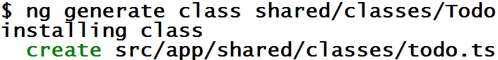
Open src/app/shared/classes/todo.ts
todo.tsAdd the following 4 fields to the Todo class to hold the information about our todo item
Field Data Type Purpose id string unique identifier to the item item string todo item text createdAt Date date added updatedAt Date date last updated completed boolean completion state user string id of the user that created the todo item id: string; item: string; completed: boolean; createdAt: Date; updatedAt: Date; user: string;To make it easier to create new todo Items and implement unit testing, we are going to add a constructor to initialize the fields. Item will required while id, completed and createdAt will be optional. The optional fields must be after all of the required fields.
constructor( item: string, id?: string, completed?: boolean, createdAt?: Date, updatedAt?: Date) { this.id = id; this.item = item; this.completed = completed ? completed: false; this.createdAt = createdAt ? createdAt: new Date(); this.updatedAt = updatedAt ? updatedAt: new Date(); }
Exercise: Create Todo Service
- Within VS Code, open up the integrated terminal (ctrl+`) or view menu and then "Integrated Terminal"
Run the ng generate command below to create the todo component
ng generate service shared/services/Todo --module AppThis will create 2 files and update the app.module to add the TodoService into the providers list
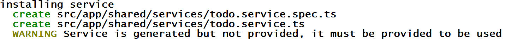
- todo.service.ts
- todo.service.spec.ts
Exercise: Save Todo Item
Now that we have the Todo service file created, we need to add our save method that calls our json-server api server and then update the Todo component to call the service.
Open src\app\shared\services\todo.service.ts
todo.service.tsImport the following so that we can make our HTTP calls and get a response back.
import { Http, Response, RequestOptions } from '@angular/http'; import { Observable } from 'rxjs/Rx';In order to use the HTTP module, we need to inject it into our constructor
constructor(private http: Http) { }For the API that we are using (SailsJS based), it requires that we set the HTTP option to allow credentials so that the session cookie can be passed back and forth, else it will always think you haven't logged in. Add this varaible to the TodoService class.
private options = new RequestOptions({ withCredentials: true });You will need to pass in this.options as the last parameter for all of our http calls.Before we create our save method we need to import the Todo class so that our data is typed when we pass it from the service the component.
import { Todo } from '../classes/todo';Next we need to create our save function that will call our API, pass in our TodoItem, and return back the results to the component.
save(item: string): Observable<Todo> { return this.http.post('https://dj-sails-todo.azurewebsites.net/todo', new Todo(item), this.options) .map((res: Response) => { return <Todo>res.json(); }) .catch(error => { console.log('save error', error) return error; }); }
Exercise: Display Todo Item
Now that we have our Todo service save function created, we need to call it from our Todo component so that we can save our data.
Open the src\app\todo\todo.component.ts file
todo.component.tsBefore we can call the
TodoService.savefunction we have to import the TodoServiceimport { TodoService } from '../shared/services/todo.service';Now that we have the TodoService import we need to inject it into the constructor to make it avaiable to the component.
constructor(private formBuilder: FormBuilder, private todoService: TodoService) { }Update the save method with the following code to call the
TodoService.savefunction and output the result to the consolethis.todoService.save(this.addForm.value.item) .subscribe(result => { console.log('save result', result); }, error => { this.errorMessage = <any>error; });We now need to create the errorMessage variable that is of type string in the Todocomponent class
errorMessage: string;Open the todo.component.html file so that we can add the display of the save error message.
todo.component.htmlNow we need to add an alert section to our todo.component.html to display the error message. After the
</form>tag, add the following code<div *ngIf="errorMessage" class="alert alert-danger" role="alert"> <h3>Error Saving</h3> {{ errorMessage }} </div>Testing the error message display requires that we temporary set a value for the errorMessage. We are going to do this in the ngOnInit just to verify that the error message will display:
this.errorMessage = 'testing'Now if you go to http://localhost:4200 you will see the following display
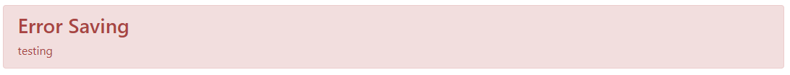
We can remove the temporary value that we set for the errorMessage.
Displaying Items
Now that we have the ability to save our items, we need to be able to display the current list
Exercise: Get Todo Items
First thing we need to do is add a function to the todo service to get the list of todo items.
Open the src\app\shared\services\todo.service.ts file
todo.service.tsAdd the following function to make an http get call to our Todo API and return back an array of Todo items.
getAll(): Observable<Array<Todo>>{ let url = "https://dj-sails-todo.azurewebsites.net/todo"; return this.http.get(url, this.options) .map((res: Response) => { return <Array<Todo>>res.json(); }) .catch(error => { console.log('get error', error); return error; }); }
Exercise: Display Todo Items in the UI
Now that we have the TodoService.getAll function created, we are ready to call the function from our TodoComponent. We will make this call in the ngOnInit function so that it will display the list on component render.
Open the src\app\todo\todo.component.ts file
todo.component.tsImport the todo class
import { Todo } from '../shared/classes/todo';Create a variable in the TodoComponent class called todoList that is an array of Todo and intialize to an empty array
todoList: Array<Todo> = [];Create the getTodoListAll function that will return void, call the TodoService.getAll function and set a todoList variable at the Todocomponent class level.
getTodoListAll(): void { this.todoService.getAll() .subscribe( data => { this.todoList = data; }, error => { this.errorMessage = <any>error; } ); }Now we are ready to call the getTodoListAll function in ngOnInit
this.getTodoListAll();
Exercise: Html to Display Items
Open the src\app\todo\todo.component.html
todo.component.htmlSince we have our form working, remove the form status table.
After the error message alert, add the following html to display the list of todo items
<div class="row" *ngFor="let todoItem of todoList"> <div class="col-12 done-{{todoItem.completed}}"> {{todoItem.item}} <small>created: {{todoItem.createdAt | date:'short'}}</small> </div> </div>- the *ngFor will loop through all of the items in the todoList variable that we will be creating next.
- For the date, we are using the built-in date pipe to convert it to a short date that strips out the time part of the date
- We are also setup to have a different style when an item is completed. We will add the styling in a bit.
Update List on Save
Exercise: Updating Todo list on save
Now that we have the Todo list being stored in the todoList variable, when we save a new todo item, we can add it to the todoList array and the todo list will automatically update with the change.
Open todo.component.ts
todo.component.tsIn the todo.component.ts file, we need to update the save function to push the save result into the todoList array. We need to add this code into the subscribe of the
TodoService.savecall.this.todoList.push(result);When you add a new todo item, the list will now update itself.
Complete Todo
Right now the todo list is just a read only view. However, we need to have the ability to complete a todo item. We are going to add an icon to the todo list that will toggle the completed state and save the todo item.
Exercise: Save Updated Todo Item
Open the src\app\shared\services\todo.service.ts file
todo.service.tsWe are going to create an update method that will take in a Todo item and make an http put call to our API to update the one record with the new completion state.
updateTodo(todo: Todo): Observable<Todo> { let url = `https://dj-sails-todo.azurewebsites.net/todo/${todo.id}`; return this.http.put(url, todo, this.options) .map((res: Response) => <Todo>res.json()) .catch(error => { console.log('update error', error); return error; }); }- For the url we are using string interpolation to create the url. This is done with the `` tags and the ${}
- An HTTP PUT call is used to update a record and requires an ID as part of the URL to figure out which record you are updating
Exercise: Enable Toggle in UI and Save
Now we need to call the updateTodo function that we just created in the TodoService from our UI component.
Open the todo.component.ts file
todo.component.tsCreate the completeTodo method that the UI will call
completeTodo(todo: Todo): void { todo.completed = !todo.completed; this.todoService.updateTodo(todo) .subscribe( data => { // do nothing }, error => { todo.completed = !todo.completed; this.errorMessage = <any>error; console.log('complete error', this.errorMessage); }); }- For now we are not going to do anything with the returned result. In the future you could call a sort function or update an open todo item counter.
The last thing we need to do it do update the UI to have a checkbox icon that will be clicked on to toggle the completion state.
Open the todo.component.html file
todo.component.htmlInside the ngFor loop, above the existing div that is displaying the individual item, add the following icon that uses the Font Awesome library for the icon and is set to take up 1 column of space
<div class="col-1" (click)="completeTodo(todoItem)"><i [className]="todoItem.completed ? 'fa fa-check-square-o' : 'fa fa-square-o'"></i></div>- We are passing in the todo item that we are wanting to update to the completedTodo function. This will pass in the whole object so we have access to all of the fields.
- We are updating the icon used based on the completed field state. If completed we are using fa-check-square-o. If not completed, we are using fa-square-o
With Bootstrap it is a 12 column grid, so we need to reduce the size of the existing div from col-12 to col-11 in order to fit in the complete checkbox
The reason that we used the Bootstrap grid is so that everything wrapped correctly with longer todo items and when the screen was smaller. The Bootstrap grid provides this functionality automatically for you.The html for the display of the Todo list should look like the following:
<div class="row todo" *ngFor="let todoItem of todoList"> <div class="col-1" (click)="completeTodo(todoItem)"><i [className]="todoItem.completed ? 'fa fa-check-square-o' : 'fa fa-square-o'"></i></div> <div class="col-11 done-{{todoItem.completed}}">{{todoItem.item}} <br /><small>created: {{todoItem.createdAt | date:'short'}}</small></div> </div>
Delete Todo
Exercise: Delete Todo Item from Data Store
In addition to being able to complete a todo item, we also need to be able to delete one. We need to add an icon to the todo list that will call a delete function in the component and delete the todo item from our database.
Open the src\app\shared\services\todo.service.ts file
todo.service.tsWe need to create a delete method that will call our API using http.delete
deleteTodo(todo: Todo): Observable<Response> { let url = `https://dj-sails-todo.azurewebsites.net/todo/${todo.id}`; return this.http.delete(url, this.options) .catch(error => { console.log('delete error', error); return error; }); }- We are passing in the todo item id that we are wanting to delete.
- We are not doing any kind of mapping of the return results since there is none. It is either successful or not.
Exercise: Add Delete Option to UI
Next we need to create the deleteTodo item function in the component that will call the TodoService.delete function
Open the todo.component.ts file
todo.component.tsWe need to create a function that will call the todoService.deleteTodo function and then remove the item from the todoList array that is being used by the UI to display the todo items.
deleteTodo(todo: Todo): void { this.todoService.deleteTodo(todo) .subscribe( data => { let index = this.todoList.indexOf(todo); this.todoList.splice(index, 1); }, error => { todo.completed = !todo.completed; this.errorMessage = <any>error; console.log('complete error', this.errorMessage); }); }Note: We could have also just called the TodoService.getAll function but since we already have all of the items and the items are specific to a single user, there is no need to make the extra database call.
The last thing that we need to do is to add the delete icon to the todo list.
Open the todo.component.html file
todo.component.htmlAfter the div that displays the todo item and date but still inside of the ngFor div, we need to add a div that will hold the delete icon. We will be using the fa-trash icon. When the icon is clicked it will call the TodoComponent.deleteTodo function. The icon is going to take up 1 column of space in the grid.
<div class="col-1" (click)="deleteTodo(todoItem)"><i class="fa fa-trash"></i></div>Since the Bootstrap grid is 12 columns wide, we need to reduce the text div from col-11 to col-10 to be able to fit in the delete icon.
The reason that we used the Bootstrap grid is so that everything wrapped correctly with longer todo items and when the screen was smaller. The Bootstrap grid provides this functionality automatically for you.The html for the display of the Todo list should look like the following:
<div class="row todo" *ngFor="let todoItem of todoList"> <div class="col-1" (click)="completeTodo(todoItem)"><i [className]="todoItem.completed ? 'fa fa-check-square-o' : 'fa fa-square-o'"></i></div> <div class="col-10 done-{{todoItem.completed}}">{{todoItem.item}} <br /><small>created: {{todoItem.createdAt | date:'short'}}</small></div> <div class="col-1" (click)="deleteTodo(todoItem)"><i class="fa fa-trash"></i></div> </div>You can now test the delete functionality. Warning that it will not ask if you want to delete the item. It will just delete it.
For now, you will need to 1st hit http://localhost:4200/login before you can successfully delete a todo item since they are associated to a user. After you have logged in, you can delete as many items as you would like without hitting login again. In the next chapter we will implement a login check that will redirect you to login first.
Adding Style
Exercise: Making the Todo list look nicer
Right now the UI looks decent but with a few tweaks it could look much better.
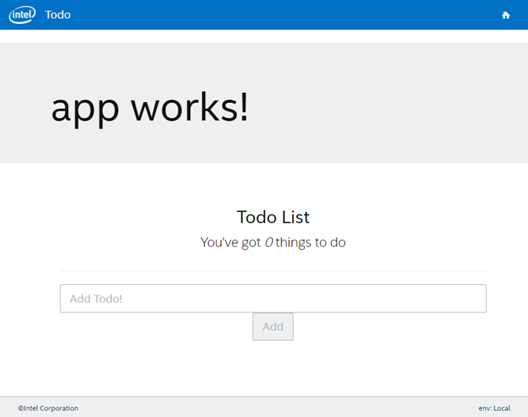
If we added some padding around each row, a bottom border, made the date smaller and gray, increased the size of each icon and made the completed items gray with a strike-through, the UI would pop.
The first thing we need to do is add in our styles to the Todo component. Since these styles are strictly for the Todo component we are going to add them into the todo.component.scss instead of the app's style.scss file.
Open the src\app\todo\todo.component.scss
todo.component.scssAdd the following contents to the file. To ensure we are following our branding, we are importing our scss color variables.
@import "../../assets/bootstrap/variables"; div.todo { width: 100%; padding-bottom: .2em; padding-top: .2em; border-bottom: 1px solid $gray-light; font-size: 1.4em; small { font-size: .7em; color: $gray-light; } i { width: 40px; padding-right: 10px; vertical-align: middle } .done-true { text-decoration: line-through; color: $gray-light; } }Now if you view the UI it should look like below.
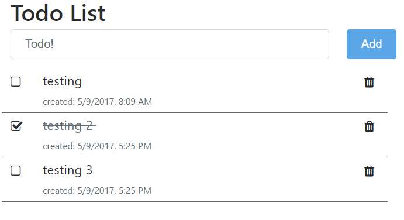
Review
We did a lot in this chapter implementing our Reactive form
- Created a form using the FormBuilder
- Added validation to the FormBuilder
- Created a value change observable to set the field validation messages
- Added debounce to wait for a second after the user stops typing before checking the field validation
- Show the list of todo list with icons to complete and delete todo items
We used several Angular directives to implement functionality in the UI:
- *ngIf - replacement for ng-if. Only show section if condition is true
- *ngFor - replacement for ng-repeat. Loop through a list and do something
- [(ngModel)] - two-way data binding
- (click) - binds to the click event
- [className] - replacement for ngClass and set the css class for the element
- (ngModelChange) - runs method when the [(ngModel)] value changes
- [hidden] - hides the element when condition is true
- (ngSubmit) - submits a form
- [formGroup] - used for reactive forms. basically dynamic forms that you can control in the controller
- [disabled] - set the element to disabled when condition is true
Possible Enhancements
- Sort the data in the UI by name and completed status so that all of the todo items that are not done are at the top and sorted alphabetically.
- Add a counter that tracked number of open items
- Clear the form after add
The walk through for these enhancements is in the bonus chapter for the Additional Todo Features.
Locking Down Routes
Overview
Right now in order to use our Todo list, we have to manually go to the login page first. This is a terrible user experience. Luckily, Angular has the ability to do checks before allowing a user into a route by implementing a guard on a route.
Guards allow you to authentication or authorization check before allowing a user to perform an action. Common usage cases are:
- Role checks such as admin before allowing the user into the admin section of the application
- Is the user logged in check before allowing them into the page the pulls or updates data
- Is the user logged out before allowing them to create an account
In this chapter we are going to implement a check for if the user is logged in before allowing them to view the home page and interact with the Todo list.
Goals
- Understand how to protect a route
- Understand how to use a guard
Code from Previous Chapter
If you have not completed the previous chapter you can get the completed code by downloading the code from Github.
Exercise: Downloading Code
- Downloading and extracting the zip file into your projects folder (c:\projects or ~/projects) at https://github.com/digitaldrummerj/angular-tutorial-code/archive/chapter-reactvive-forms.zip
After you get the code, run npm install to get all of the NPM dependencies.
npm installOpen Visual Studio Code
- In Visual Studio Code, go under the File menu, select Open folder and navigate to the folder that you unzipped the files into
- If you have ng serve running in a different editor, make sure to stop it from running.
Open the Integrated Terminal in Visual Studio Code (ctrl + `) and run ng serve
ng serve
Create Guard
Exercise: Check If User Is Logged In
Open terminal and generate the guard
ng generate guard shared/guards/IsLoggedIn --module AppModule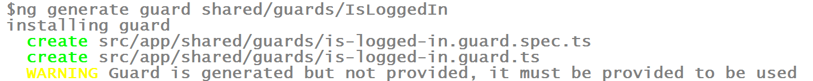
Add Logic to Guard
Exercise: Check If User Is Authenticated
We need to make a call to the API to check if the user is logged into the API or not. Since the login happens in the API, we need to check there and not just verify that we have the user info in the UI.
Open the src\app\shared\services\auth.service.ts file
auth.service.tsAdd an isAuthenticated function to the AuthService that checks the API to make sure that the user is still logged in
isAuthenticated(): Observable<boolean> { return this.http.get("https://dj-sails-todo.azurewebsites.net/user/identity", this.options) .map((res: Response) => { if (res) { return Observable.of(true); } return Observable.of(false); }) .catch((error: Response) => { if (error.status !== 403) { console.log('isAuthenticated error', error); } return Observable.of(false); }); }
Next we need to add logic to the guard's canActivate function to call the AuthService.isAuthenticated function
Open src\app\shared\guards\is-logged-in.guard.ts
is-logged-in.guard.tsImport the AuthService
import { AuthService } from '../services/auth.service';We are going to redirect our user to the home page if they are logged. In order to do this we need to add the Router to the @angular/route import statement like so
import { CanActivate, ActivatedRouteSnapshot, RouterStateSnapshot , Router} from '@angular/router';Before we can use the AuthService and router we need to create a constructor and inject them into it
constructor(private authService: AuthService, private router: Router) { }In the canActivate function we need to replace the return true with the following logic that will call the AuthService.isAuthenticated function and return if the user is logged in or not. If the user is not logged in or there is an error validating if they are logged in then we will navigate them to the login route else we will let them into the route
let isLoggedIn = new Observable<boolean>(observer => { this.authService.isAuthenticated() .subscribe((res: boolean) => { if (res) { observer.next(true); observer.complete(); } else { this.router.navigate(['/login']); observer.next(false); observer.complete(); } }, error => { this.router.navigate(['/login']); observer.next(false); observer.complete(); }); }); return isLoggedIn;
Add Guard to Route
In order to use the Guard we need to add it to the route. Each route has a canActivate attribute that takes an array of guards as the 3rd parameter.
Exercise: Add Guard to Route
Open the app-routing.module.ts file
app-routing.module.tsImport the IsLoggedInGuard
import { IsLoggedInGuard} from './shared/guards/is-logged-in.guard'To the default route, add the canActivate attribute with the value being an array that contains the IsLoggedInGuard
, canActivate: [IsLoggedInGuard]You route should look like
{ path: '', children: [], component: TodoComponent, canActivate: [IsLoggedInGuard] },When you try to go to http://localhost:4200 if you are not already logged in it will redirect you to the login page.
Environment Configuration
Overview
So far we have been hard coding our API url into our services which means we have the base url in multiple places. Instead we should be using a configuration file that stores the API in one place and allows us to use it anywhere in the application. Luckily, Angular comes with environment configuration files that allow us to do just that.
The different environment configurations are stored in the src\environments folder.
Goals
- Learn how to change configurations per environment
- Implement environment configurations
Code from Previous Chapter
If you have not completed the previous chapter you can get the completed code by downloading the code from Github.
Exercise: Downloading Code
- Downloading and extracting the zip file into your projects folder (c:\projects or ~/projects) at https://github.com/digitaldrummerj/angular-tutorial-code/archive/chapter-lock-down-routes.zip
After you get the code, run npm install to get all of the NPM dependencies.
npm installOpen Visual Studio Code
- In Visual Studio Code, go under the File menu, select Open folder and navigate to the folder that you unzipped the files into
- If you have ng serve running in a different editor, make sure to stop it from running.
Open the Integrated Terminal in Visual Studio Code (ctrl + `) and run ng serve
ng serve
Default Configuration
The src\environments\environment.ts file is the default configurations if no environment is specified when running ng serve
In the environment.ts we need to add the environmentName and apiBaseUrl values. The apiBaseUrl is the base url for our API and the environment name is an easy recognizable name for the environment.
Exercise: Setup Default Configuration
Open the src\environments\environment.ts file
environment.tsAdd the environmentName and apiBaseUrl values to the environment object.
environmentName: 'Development', apiBaseUrl: 'https://dj-sails-todo.azurewebsites.net'The environment object should look like the following
export const environment = { production: false, environmentName: 'Development', apiBaseUrl: 'https://dj-sails-todo.azurewebsites.net' };
Local Development
The other environment that is typically created is for local development on your machine. For this tutorial the environment.ts and local.ts have the same values but once you go from development to production they will differ.
Exercise: Create Local Configuration
- Create the file src\environments\environment.local.ts file by right-clicking on the src\environments directory and selecting new file
```bash
environment.local.ts
```
Add the following to the environment.local.ts file
export const environment = { production: false, environmentName: 'Local', apiBaseUrl: 'https://dj-sails-todo.azurewebsites.net' };In order to use the environment.local.ts file we need to tell the Angular CLI that it exist by adding it to the environments section of the .angular-cli.json that is in the root of the project.
.angular-cli.jsonFind the apps\environments section and add the local configuration to the at the top of the list of environments)
"local": "environments/environment.local.ts",Note that the order of the environments is not importantThe environments section should look like
"environments": { "local": "environments/environment.local.ts", "dev": "environments/environment.ts", "prod": "environments/environment.prod.ts" }
Exercise: Updating Services With Environment Url
Now that we have the API url in the environments file, we need update the TodoService and AuthService to use the base url from the environments file instead of having it hard coded. We should also create a variable in each of the services to hold the base url so we don't have it all over the place in the services.
Open the src\app\shared\services\todo.service.ts file
todo.service.tsImport the environment file
import { environment } from '../../../environments/environment';Create a private variable called url inside the TodoService class that gets the apiBaseUrl from the environment file and append on the /todo
private url: string = `${environment.apiBaseUrl}/todo`;For the save and getAll function update the hard coded url to use the class level url variable. Don't forget due to scoping that you need to access the variable by using this.url
this.urlFor the updateTodo and deleteTodo we need to replace the hard coded url with the class level url variable. Since we are already using string interpolation to create the string, we need to replace the hard coded value with
${this.url}let url = `${this.url}/${todo.id}`;Everything should still work to list, insert, update and delete todo items as before but now the url is no longer hard coded and can easily be changed as you move to different environments.
Now repeat the same process with the AuthService
auth.service.ts
Exercise: Testing Configurations
Default
If an environment is not passed into the ng serve command, then it will default to using the environment.ts file
- Go to the terminal that is running the
ng servecommand and do a ctrl+c to stop it. Run the
ng servecommand again.ng serveEverything should still start as normal. You will not see any changes at this point since nothing is using those settings. We will use them in a bit in our footer and our services.
Local
If you want to run the local configuration we need to pass in the environment command line argument. The environment argument value is the name of the environment name in the angular-cli.json file. Note that you can only have 1 ng serve running at a time.
- Go to the terminal that is running
ng serveand do a ctrol+c to stop it Run the
ng servecommand with the -e and specify the local environmentng serve -e localIf the Angular compile was successful, you will now be using the local environment configuration. Since our API urls are the same between files you will not see any difference at this time. In the Header and Footer chapter we will add a footer that displays the environment name.
Implementing Default Route
Overview
Right now if the user types in a route that Angular does not know about you will get the following error
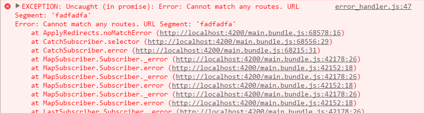
I prefer to solve this problem by creating a "Not Found" component and then redirecting the user to this component if they try to navigate to a route that does not exist.
Goals
- Understand how to deal with an unknown route
Code from Previous Chapter
If you have not completed the previous chapter you can get the completed code by downloading the code from Github.
Exercise: Downloading Code
- Downloading and extracting the zip file into your projects folder (c:\projects or ~/projects) at https://github.com/digitaldrummerj/angular-tutorial-code/archive/chapter-env-config.zip
After you get the code, run npm install to get all of the NPM dependencies.
npm installOpen Visual Studio Code
- In Visual Studio Code, go under the File menu, select Open folder and navigate to the folder that you unzipped the files into
- If you have ng serve running in a different editor, make sure to stop it from running.
Open the Integrated Terminal in Visual Studio Code (ctrl + `) and run ng serve
ng serve
Create Not Found Component
Exercise: Redirecting User to "Not Found" component
Open the integrated terminal and generate the notFound component
ng generate component notFound4 files are created just like when we created the TodoComponent earlier. You will notice this time though that the Angular Cli put a dash between not and found. It will automatically do that when it encounters an uppercase character.
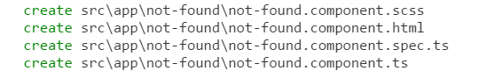
Open src\app\app-routing.module.ts
app-routing.module.tsadd an import statement for the NotFoundComponent
import { NotFoundComponent } from './not-found/not-found.component';Add the ** route to and set it to use the NotFoundComponent
{ path: '**', component: NotFoundComponent }Your routes should look like so
const routes: Routes = [ { path: '', children: [], component: TodoComponent, canActivate: [IsLoggedInGuard] }, { path: 'login', children: [], component: LoginComponent }, { path: 'signup', component: SignupComponent }, { path: '**', component: NotFoundComponent } ];If you now try to navigate to http://localhost:4200/unknown you will be shown the NotFoundComponent
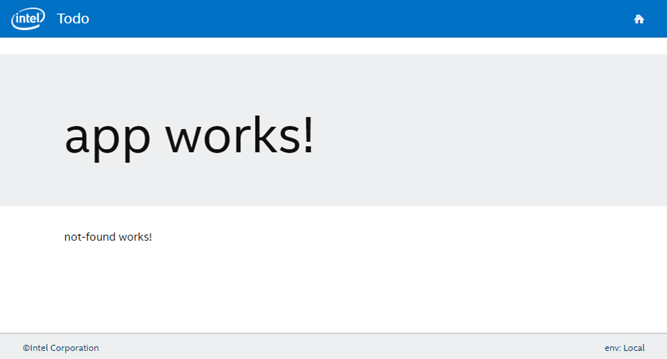
The only thing left for you to do is to design what you want your not found page to actually say.
Header and footer
Overview
In most web sites we have a header and footer at the top and bottom of the page respectively with our logo, navigation, and important links. The header will contain our logo and navigation menu while the footer will contain our copyright info.
Goals
- Understand how to create a new component
- Understand how to include components inside of other components
- Understand how to utilize Bootstrap
Code from Previous Chapter
If you have not completed the previous chapter you can get the completed code by downloading the code from Github.
Exercise: Downloading Code
- Downloading and extracting the zip file into your projects folder (c:\projects or ~/projects) at https://github.com/digitaldrummerj/angular-tutorial-code/archive/chapter-default-route.zip
After you get the code, run npm install to get all of the NPM dependencies.
npm installOpen Visual Studio Code
- In Visual Studio Code, go under the File menu, select Open folder and navigate to the folder that you unzipped the files into
- If you have ng serve running in a different editor, make sure to stop it from running.
Open the Integrated Terminal in Visual Studio Code (ctrl + `) and run ng serve
ng serve
Create Header Component
Exercise: Creating the header component
We can leave ng serve running while we make these changes and open up another Integrate Terminal for the commands below.
Open the VSCode Integrated Terminal and run the ng generate command to create the header component in the shared folder
ng generate component shared/headerThe generate command will create 4 files:
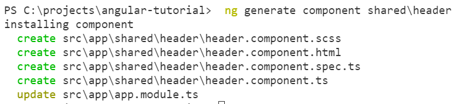
- scss (styles)
- html (view)
- spec file (test)
- component (controller)
- added a reference to the component in the app.module.ts file.
Exercise: Add the Menu
Open the src\app\shared\header.component.html file
header.component.htmlReplace the contents with the following.
<header> <nav class="navbar navbar-toggleable-md navbar-light bg-faded"> <button class="navbar-toggler navbar-toggler-right" type="button" data-toggle="collapse" data-target="#navbarSupportedContent" aria-controls="navbarSupportedContent" aria-expanded="false" aria-label="Toggle navigation"> <span class="navbar-toggler-icon"></span> </button> <a class="navbar-brand" [routerLink]="['/']"><img class="navbar-logo" src="./assets/todo_logo.png" alt="Logo"></a> <div class="collapse navbar-collapse" id="navbarSupportedContent"> <ul class="nav navbar-nav mr-auto"> <li class="nav-item active"> <a class="nav-link" [routerLink]="['/']">All Items</a> </li> <li class="nav-item active"> <a class="nav-link" [routerLink]="['/unknown']">"Unknown"</a> </li> <li class="nav-item active"> <a class="nav-link" [routerLink]="['/login']">Login</a> </li> <li class="nav-item active"> <a class="nav-link" [routerLink]="['/signup']">Signup</a> </li> </ul> </div> </nav> </header>Right-click on the logo below and save it to the src/assets folder of our project

Display Header
Exercise: Update Main page
Now that we have created the menu, we need to add it to the app component so that it shows on every page.
One of the really cool things that we can do with components is include them inside of other components. This makes it very easy to create reusable components.
Open the src\app\app.component.ts file
app.component.tsImport the header component. Add the import statement on line 2 right below the existing import statement.
import { HeaderComponent } from './shared/header/header.component';Open the src\app\app.component.html file
app.component.htmlAdd the app-header to the top of the html code
<app-header></app-header>If you view the web page you should see the header with logo, the menu and our banner. To make it easy to navigate between the routes we have created, we added all of them to the menu. Normally you would only add the ones that a user should directly get to by clicking on a link.
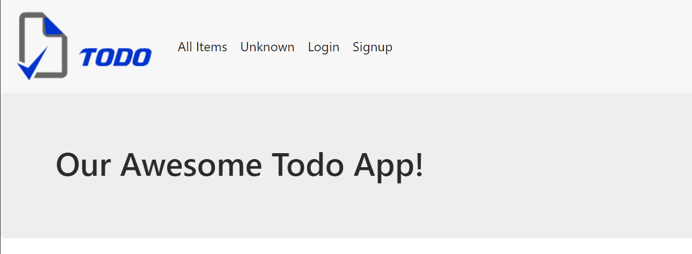
To make it easy to navigate between the routes we have created, we added all of them to the menu. Normally you would only add the ones that a user should directly get to by clicking on a link.
Exercise: Make Menu Responsive
Since we are not including JQuery in our application, when the Bootstrap menu the collapse button does not open up the menu. To make the menu open we are going to use the Collapse component from the ng-bootstrap library.
Open src\app\shared\header\header.component.ts
header.component.tsCreate a variable named isCollapsed that is a boolean and set to false. This will be used tdo hold if the menu is collapsed or not.
isCollapsed: boolean = true;Create a function to toggle the menu named toggleMenu that sets isCollapsed set to the opposite of its current value
toggleMenu() { this.isCollapsed = !this.isCollapsed; }Open up the src\app\shared\header\header.component.html
header.component.htmlTo the button add a click event call to the toggleMenu function
(click)="toggleMenu()"To each link with a nav-link class add a click event that calls toggleMenu
(click)="toggleMenu()"Onto the div with the collapse class you need to add an
[ngbCollapse]tag that is set to the isCollapsed variable[ngbCollapse]="isCollapsed"Now if you shrink the browser small enough the collapsed menu will show up. When you click on the menu icon or any of the links within the menu it will toggle the collapse state of the menu.
Create Footer
Creating the footer is very similar to creating the header. The biggest difference is that we have some css styling that we will apply to position the footer at the bottom of the page and shrink the body height so that text does not get stuck behind the footer.
Exercise: Creating the footer component
In the Integrated Terminal, run the ng generate command to create the header component
ng generate component shared/footerThe generate command will create 4 files:
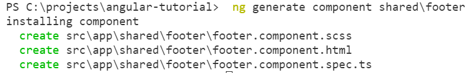
- scss (styles)
- html (view)
- spec file (test)
- component (controller)
- add reference to the component in the app.module.ts file.
Exercise: Footer UI
Open src\app\shared\footer\footer.component.html
footer.component.htmlReplace the contents with
<footer> <div class="pull-left"> ©Angular WS </div> </footer>
Exercise: Styling the Footer
We want to postion the footer at bottom of the page and change the background color.
Open src\app\footer\footer.component.scss file
footer.component.scssAdd the following to make the footer at the bottom of the page with a height of 50px, a gray background and some padding around the div
@import "../../../assets/bootstrap/variables.scss"; footer { position: fixed; height: 50px; bottom: 0; left: 0; right: 0; padding: 10px 5px; border-top: 1px solid $gray-light; background-color: $gray-lighter; font-size: 0.8em; color: $dark-blue; div { margin-left: 25px; margin-right: 25px; } }
Display Footer
Exercise: Update Main page
Now we are ready to add our footer to the Main page
Open the src\app\app.component.ts file
app.component.tsWe need to import the FooterComponent before we can use it on the Main Page which is our AppComponent
import { FooterComponent } from './shared/footer/footer.component';Now we can add the
<app-footer>tag in the src\app\app.component.htmlapp.component.htmlAdd the
<app-footer>at the bottom of the html<app-footer></app-footer>If you view the web page you should see the footer
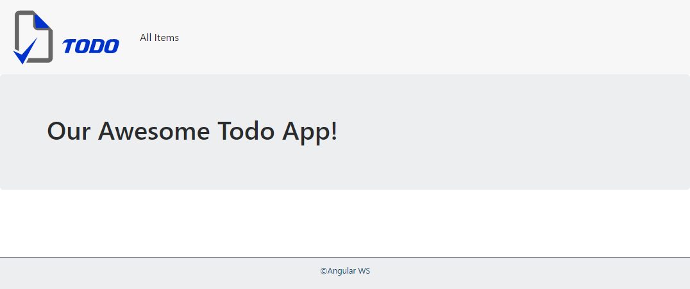
Exercise: Fixing body height
Since we have a static footer, will need to change the body height to account for the footer height. Without doing this the body content will be hidden for the last 50px of the screen like it is currently doing if you have any todo items in your list.
Up to this point, we have only been dealing with component level styles. For the body height, we want it to apply to the whole site. We can do this by putting the styling in the src\style.scss file
Open the src\style.scss file
style.scssAdd the following css code to adjust the body height. We are going an extra 10 pixels in height to give a little bit of padding around the text in the footer.
html { position: relative; height: auto; min-height: 100%; } body { position: static; height: auto; margin: 0 0 60px; /* bottom = footer height */ }
Exercise: Add Environment Name to Footer
Earlier we created an environment name variable in the different Angular environment files. Wouldn't it be nice if we displayed which environment we were in within the footer.
Open the src\app\shared\footer\footer.component.ts file
footer.component.tsImport the environment into the file on line 2 right below the Angular core import
import { environment } from '../../../environments/environment';Inside the FooterComponent class we to add a variable to capture the environment name that Angular is running in
public env = environment.environmentName;
Now we can display the env variable in our footer's html
Open the src\app\shared\footer\footer.component.html file
footer.component.htmlAfter the "Angular WS" div but instead the footer tag add the following to display the env value
<div class="pull-right"> env: {{ env }} </div>If you view the web page you should see the footer
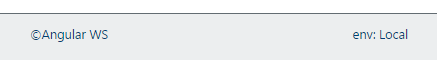
Notice that the env:Local in the footer is coming from the environment.local.ts file. If you stopng serveand run it without using the-e localargument, the env value will change to Development 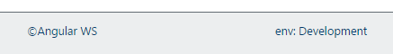
Review
In this chapter will learned:
- How to create new components
- How to import and use components within other components
- Learned about component level styles so that they only apply to a single component
- Learned how to do global styles that apply to the whole site
- Learned that if we have a static footer that we need to adjust the body margin height to stop content for being hidden behind the footer.
- Learned that the
<router-outlet></router-outlet>tag is used to tell Angular the location within the html code to render the routed component's template (html)
Deploying
Overview
Before deploy you will need to run an a build with the Angular CLI. With the build you can tell it the environment to use and if it is a production build or not. A production will minify everything.
Goals
- Learn how to create a build that is ready to deploy.
Non-Production Build
Select which type of build you want to run: Non-Production or Production
Exercise: Running Non-Production Build
Run the following command to run a build that uses the environment.ts file and is not a production build
ng build
Production Build
Exercise: Running a Production Build
Run the following command to run a build that uses the environment.prod.ts file and is a production build. The environment name must match the file name for it to be valid.
ng build --target=production --environment=prod
Bonus: Additional Todo Features
Overview
Right now the Todo UI is fully functional but there is some nice usability enhancements we could implement. For example:
- The todo list is sorted by when it was created, it would be much nicer to sort alphabetically and by completion status.
- There is no way to see a count of how many items you have open.
- The add form is not cleared out on successful save.
Goals
- Show how to sort on the client side
- Show how to reset a form
- Show how to a filtered an array and display the count of filtered items
Code from Previous Chapter
If you have not completed the previous chapter you can get the completed code by downloading the code from Github.
Exercise: Downloading Code
- Downloading and extracting the zip file into your projects folder (c:\projects or ~/projects) at https://github.com/digitaldrummerj/angular-tutorial-code/archive/chapter-header-footer.zip
After you get the code, run npm install to get all of the NPM dependencies.
npm installOpen Visual Studio Code
- In Visual Studio Code, go under the File menu, select Open folder and navigate to the folder that you unzipped the files into
- If you have ng serve running in a different editor, make sure to stop it from running.
Open the Integrated Terminal in Visual Studio Code (ctrl + `) and run ng serve
ng serve
Displaying Open Item Count
It would be nice to know how many todo items that the user has and display that in the UI.
Requirements:
- Display a count a open todo items without querying the API
- Update the count when getting, updating and deleting the todo item list.
Exercise: Calculating Open Items
Open the src\app\todo\todo.component.ts file
todo.component.tsCreate a variable to hold the open count in the TodoComponent class that is of type number with a default value of 0
openItemCount: number = 0;Create a function called calculateOpenItems that filters the todoList to only show when the completed status is false and get the length.
calculateOpenItems(): void { this.openItemCount = this.todoList.filter(item => item.completed === false).length; }
Exercise: Calculate Item Count When Pulling Items
In src\app\todo\todo.component.ts that we already have open, find the getTodoListAll function and add a call to the calculateOpenItems function after setting the todoList variable but still within the
datafunction.this.calculateOpenItems();
Exercise: Add Open Item Count to UI
Now that we have the todo open item count being calculating on component render, we are going to add it to the UI. For now it will only be updated on component render.
Open the src\app\todo\todo.component.html file
todo.component.htmlInside of the page-header div after the "Todo List" title, add the following html
<p class="lead">You've got <em>{{openItemCount}}</em> things to do</p>The UI should now look like
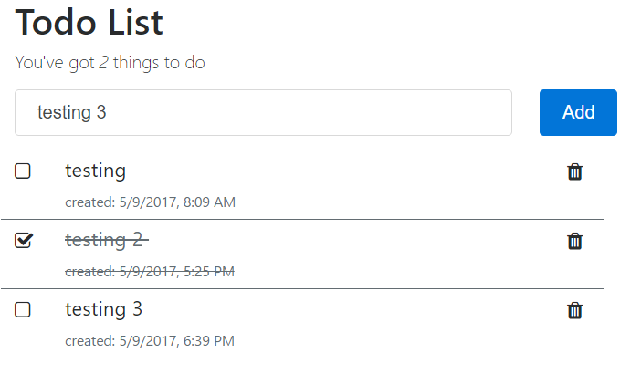
Exercise: Update Open Item Count on Add
Open src\app\todo\todo.component.ts
todo.component.tsFind the save method and increment the openItemCount after we push the new item into the todoList array
this.openItemCount++;
Exercise: Update Open Item on Complete
When we toggle the completion status of a Todo item we also need to update the openItemCount value. We want to make this update after successfully calling the TodoService.updateTodo service function. Since it is a toggle we need to have a little bit of logic to figure out if the item was originally completed or not.
In the todo.component.ts file
todo.component.tsFind the completeTodo function and add the logic below in the subscribe data. This logics reads if the todo item is completed then decrement the openItemCount else increment the openItemCount;
todo.completed ? this.openItemCount-- : this.openItemCount++;
Exercise: Update Open Item on Delete
The last thing we need to do is to re-calculate the openItemCount when an item is deleted. We don't just decrement since a user can delete a completed it and there is no sense in adding in additional logic since the calculateOpenItems already has the logic.
In the src\app\todo\todo.component.ts file
todo.component.tsFind the deleteTodo function and add logic to decrement the openItemCount if the todo item being deleted was not completed. You will want to put this call after the splice that removes the item from the todo list
if (todo.completed === false) this.openItemCount--;
Now when you fetch, add, complete or delete a todo item the open item count will be updated accordingly.
Sort in the UI
Right now the data from the API is unsorted which makes the list hard to read. It would be better sort alphabetically with the uncompleted items at the top.
Requirements
- Sort by multiple fields
- Sort is case insensitive
- Sort for text fields can be done either ascending or descending
- Sort should be generic and able to be used on any array
- Completed items are at the bottom of the list
- Each item is sorted by its text after sorting by the completed status
- The sort is done on the client side and not in the API
- Sorting is done when fetching, adding, and completing
- Sorting does not need to be updated when deleting since the list is already sorted and we are just removing an item
Exercise: Creating Generic Function
- Open the Integrated Terminal
Use ng to generate a new class called FieldSorter in the shared/classes folder
ng generate class shared/classes/FieldSorterOpen the src/app/shared/classes/field-sorter.ts file
field-sorter.tsTo the FieldSorter class add the sort class below.
// made static in order to not have to new up the class to use public static sort(fieldNames: Array<string>, ignoreCase: boolean) { return (item1: object, item2: object) => fieldNames.map((field: string) => { // A-Z sorting let direction: number = 1; // if field starts with - then Z-A sorting // strip off the - sign from field name if (field.substring(0, 1) === '-') { direction = -1; field = field.substring(1); } // capture values so as not to change the original array field value // important when doing case insensitive searches else items would display in lowercase let item1Value = item1[field], item2Value = item2[field]; // if ignoring case and field value is a type of string then call toLocaleLowerCase on both fields. Used toLocaleLowerCase to accord for culture based sorting if (ignoreCase === true) { if (typeof item1Value === 'string') item1Value = item1Value.toLocaleLowerCase(); if (typeof item2Value === 'string') item2Value = item2Value.toLocaleLowerCase(); } // item1 is higher = 1, lower = -1, equal = 0 return item1Value > item2Value ? direction : item1Value < item2Value ? -(direction) : 0; }).reduce((item1SortValue: number, item2SortValue: number) => { // values will be 1 or 0 based on the map function output. // if item1SortValue is 1 and item2SortValue is 0 then item1 goes 1st // if item1SortValue is 0 and item2SortValue is 1 then item2 goes 1st // if both are equal then item2 will go 1st return item1SortValue ? item1SortValue : item2SortValue }, 0); }- We are using the map and reduce functions to accomplish our sorting task
- It is a static function so that you do not have to new up the class in order to use it
- Parameters are an array of fieldNames that corresponds to a field in the array you are sorting and a boolean to decide if case is ignored
- If you start a field name with a minus sign if will sort it descending
Exercise: Add Sorting to UI
Now that we have our generic sorting method, we can create a function to do the actual sorting that can be called in the save, getTodoListAll, and completedTodo.
Open src\app\todo\todo.component.ts
todo.component.tsAdd the following function to call the FieldSorter.sort and sort first by completed status and then by name.
sortItems(): void { this.todoList.sort(this.fieldSorter(['completed', 'name'], true)); }In the save, completeTodo and getTodoListAll functions after we have updated the todoList array, call the sortItems function
this.sortItems();Now when you fetch, add, and update todo items the list will stay sorted by completed status and then by item text. The sort is also case insensitive. 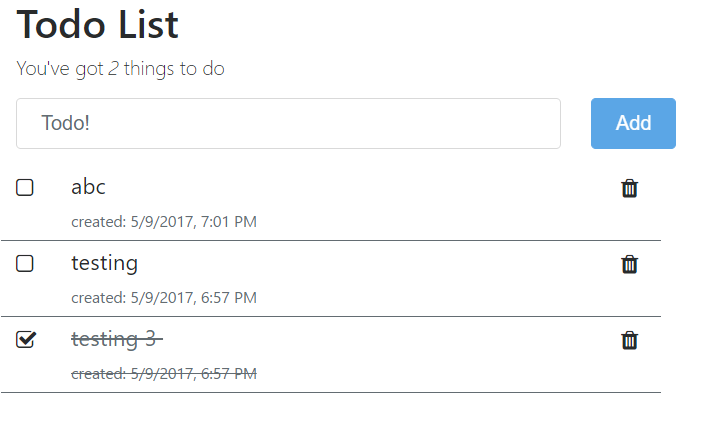
Reset Form After Save
Right now after you add a new todo item, the form does not clear out the input box. This is really annoying as a user since you would not be entering the same todo item multiple times. Since we only have 1 field we could set the field value to a blank string in the save method but that would not reset state. Instead we want to call the reset function that is part of the FormGroup that we defined addForm as.
Exercise: Add Sorting to UI
Open src\app\todo\todo.component.ts
todo.component.tsFind the save function and in the result section add the form reset call
this.addForm.reset();
Confirm Before Deleting
Right now when you delete an item it does not ask you at all for a confirmation. This is a bad user experience as they could accidentally delete something important.
There are 3 ways that we could accomplish the confirmation:
- Create a custom dialog component that we can customize the look and feel of.
- Use an component that someone else built like https://github.com/mattlewis92/angular-confirmation-popover#installation
- Use the built-in browser confirmation dialog. With this option we do not have any control of the look and feel, only the title and message.
For the sake of this workshop, we are going to go with option #3.
Exercise: Add Delete Confirmation
Open src\app\todo\todo.component.ts
todo.component.tsFind the deleteTodo function and wrap the contents of the function in the confirm call below. Since TypeScript is just a super set of JavaScript we are able to use the confirm JavaScript syntax.
if (confirm("Are you sure you want to delete?")) { // delete call goes here }
Bonus: Additional Login Features
Goals
- Understand how to create a cookie with user information in it
- Understand how to logout the user
Code from Previous Chapter
If you have not completed the previous chapter you can get the completed code by downloading the code from Github.
Exercise: Downloading Code
- Downloading and extracting the zip file into your projects folder (c:\projects or ~/projects) at https://github.com/digitaldrummerj/angular-tutorial-code/archive/chapter-additional-todo.zip
After you get the code, run npm install to get all of the NPM dependencies.
npm installOpen Visual Studio Code
- In Visual Studio Code, go under the File menu, select Open folder and navigate to the folder that you unzipped the files into
- If you have ng serve running in a different editor, make sure to stop it from running.
Open the Integrated Terminal in Visual Studio Code (ctrl + `) and run ng serve
ng serve
Caching User
Right now when you refresh the page the current user information in the AuthService is lost. We can cache the data using cookies. To implement the cookie storage we are going to use the ngx-cookie library.
Exercise: Create Class
In the AuthService, in order to hold our user data and get type checking we need to create a TypeScript class with an email and id field. We are going to leave the password field out of the class as we do not want to store this in memory at all.
- Within VS Code, open up the integrated terminal (ctrl+`) or view menu and then "Integrated Terminal"
Run the ng generate command below to create the Authorization service. I like to store my services under a shared\services folder.
ng generate class shared/classes/UserThe generate command will the user.ts file in the shared/classes folder:
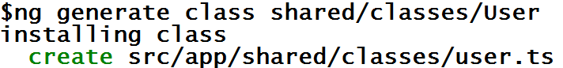
Open the src\app\shared\classes\User.ts file
user.tsWithin the User class, add the following fields. Note that the createdAt and updatedAt are automatically added by the API.
email: string; id: string; createdAt: Date; updatedAt: Date;Within the User class and before the fields we just added, create a constructor that requires an email and make an id field optional (hint: the
?makes the parameter optional)constructor(email: string, id?: string, createdAt?: Date, updatedAt?: Date){ this.email = email; this.id = id; if (createdAt) this.createdAt = createdAt; if (updatedAt) this.updatedAt = updatedAt; }
Exercise: Install ngx-cookie
Open terminal and add/install the ngx-cookie library
npm install --save ngx-cookieOpen src\app\app.module.ts
app.module.tsImport the ngx-cookie library
import { CookieModule } from 'ngx-cookie';Add the ngx-cookie library to the @Ngmodule imports sections
CookieModule.forRoot()
Exercise: Add Cookie Get/Set Functions
Open the auth.service.ts file
auth.service.tsImport the User class that we created earlier
import { User } from '../classes/user';Import the CookieService from ngx-cookie
import { CookieService } from 'ngx-cookie';Update the constructor to inject the CookieService
constructor(private http: Http, private cookieService: CookieService) {}Add a class level variable to store the name of the cookie and set it to currentUser
private cookieKey: string = "currentUser";Add the following functions to get/set the cookie to the AuthService class
getUser(): User { return <User>this.cookieService.getObject(this.cookieKey) } private setUser(value: User): void { this.cookieService.putObject(this.cookieKey, value); } private clearUser() : void { this.cookieService.remove(this.cookieKey); }
Exercise: Setting Cookie
In the auth.service.ts file, in the login, signup, and isAuthenticated functions, add a call to setUser before the return Observable.of(true) statement
this.setUser(<User>res.json());In the login and isAuthenticated functions, before the Observable.of(false) in both the result and catch section add to clearUser since the login was invalid and we want to clear out any existing user cookie
this.clearUser();
Exercise: Display logged in user
Open header.component.ts
header.component.tsImport the AuthService so that we can call the getUser function
import { AuthService } from '../services/auth.service';Add the AuthService to the constructor
constructor(private authService: AuthService) { }Open the src\app\shared\header\header.component.html
header.component.htmlInside of the
<div class="collapse navbar-collapse"....tag add the following after the closing</ul><ul class="nav navbar-nav"> <li class="nav-item"> <span class="nav-link">Welcome {{(authService.getUser())?.email}}</span> </li> </ul>- This code will display a Welcome along with the email if it is populated.
Logout User
Before being able to signup for an account, we need the user to be logged out first.
There are a number of ways that you could implement this such as giving a logout button in the header or showing user info in header with link to profile page with a logout button.
We are going to implement the logout button in the header.
Exercise: Create AuthService Logout
Open the auth.service.ts file
auth.service.tsAdd the logout function below that will call the API logout function and clear out the cookie
logout(): Observable<boolean> { return this.http.get(`${this.url}/logout`, this.options) .map((res: Response) => { this.clearUser(); if (res.ok) { return Observable.of(true); } return Observable.of(false); }) .catch(error => { console.log('logout error', error) this.clearUser(); return Observable.of(false); }); }
Exercise: Add Logout Button
Open the src\app\shared\header\header.component.html
header.component.htmlAfter the "Welcome" span tag add the following link tag to call the logout service. Also, only show the button if the user is logged in.
<a [hidden]="!authService.getUser()" (click)="logout()"> | Logout</a>
Exercise: Add Component Logging Out Function
Open header.component.ts
header.component.tsImport the AuthService and Router
import { Router } from '@angular/router';Add the Router to the constructor
constructor(private authService: AuthService, private router: Router) { }Add the logout function
logout() { this.authService.logout().subscribe(() => { this.router.navigate(['/login']); }); }You are now ready to test it.
Completed Code
If you want to get the completed code you can download it from Github
Exercise: Downloading Code
- Downloading and extracting the zip file into your projects folder (c:\projects or ~/projects) at https://github.com/digitaldrummerj/angular-tutorial-code/archive/chapter-additional-login.zip
After you get the code, run npm install to get all of the NPM dependencies.
npm installOpen Visual Studio Code
- In Visual Studio Code, go under the File menu, select Open folder and navigate to the folder that you unzipped the files into
- If you have ng serve running in a different editor, make sure to stop it from running.
Open the Integrated Terminal in Visual Studio Code (ctrl + `) and run ng serve
ng serve
Thank you
I hope that you enjoyed going through this tutorial. If you have any questions, please hit me up on twitter @digitaldrummerj.